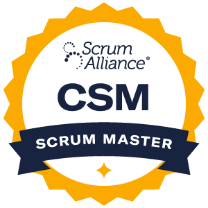

Disponible para conversaciones C-level · Málaga / Madrid
Diseño la estrategia tecnológica y dirijo la operación que la convierte en margen.
CTO & COO en WayOps. Mitad ingeniero, mitad operador: 14+ años diseñando software y un Executive MBA que me permite hablar de P&L, GTM y estrategia con la misma naturalidad que de AKS, DDD o Event-Driven Architecture.
01
Perfil
Ingeniero + operador. Tecnología medible al servicio del negocio.
Soy CTO & COO en WayOps. Diseño la estrategia tecnológica y dirijo la operación que la convierte en ingresos recurrentes y márgenes sostenibles.
14+ años diseñando software (Caduceus, idcsalud, Kabel, ilitia, TOKIOTA, Atos y ahora WayOps), más un Executive MBA por EAE Business School que aporta la capa de estrategia, P&L y GTM.
Hoy en WayOps dirijo Software, Cloud y DevOps: arquitectura .NET / Azure, CI/CD en Azure DevOps y prácticas de Platform Engineering para nuestros clientes.
Con quién quiero hablar
CEOs, fundadores, consejos y recruiters que necesiten a alguien capaz de mover una empresa de “tenemos un monolito y un equipo bloqueado” a “tenemos una plataforma medible, observable y un equipo que disfruta entregando”, sin perder de vista márgenes, runway e ingresos.
Lo que he entregado
- Modernización de plataformas .NET / Azure en cosmética, retail, telco, sanidad y enterprise.
- Implantación DevOps end-to-end: CI/CD, microservicios, IaC y observabilidad.
- Adopción de GenAI (Azure OpenAI + RAG) en el portfolio de productos.
- Reconocimientos públicos: Premio Alstom y caso de éxito oficial Microsoft.
02
Impacto
Métricas que importan al CFO y al CTO al mismo tiempo.
03
Trayectoria
14+ años entre ingeniería de producto, arquitectura cloud y dirección.
-
ago. 2019 — Actualidad · 6a 9m WayOps · COO – Head of SW, Cloud & DevOps
Madrid y alrededoresDoble rol C-level: lidero la estrategia tecnológica (CTO) y dirijo la operación (COO).
- Definí la visión tecnológica y el roadmap a 3 años, alineados con el P&L; crecimiento de ingresos recurrentes manteniendo el ratio coste-de-ingeniería / revenue.
- Escalé el equipo de ingeniería de 0 a 25 personas con career paths y modelo de Platform Engineering por squads multidisciplinares.
- Diseñé la arquitectura cloud-native multi-tenant en Azure (AKS + Service Bus + Cosmos DB) con 99,9% de SLA.
- Implanté CI/CD en Azure DevOps reduciendo lead time de días a <30 min y bajando incidencias en producción.
- Lideré la adopción de GenAI (Azure OpenAI + RAG) en productos del portfolio.
- Negocié y entregué proyectos clave para Dragados, Reale y Atos.
- .NET 10
- Vue
- Azure AKS
- Service Bus
- Cosmos DB
- Azure OpenAI
- Bicep / Terraform
- Azure DevOps
- Docker
- DDD
- Event-Driven
-
ene. 2021 — jun. 2023 · 2a 6m Zertia · Head of Cloud & Software
Provincia de MadridConsultoría estratégica y preventa de soluciones cloud para clientes enterprise.
-
dic. 2019 — dic. 2020 · 1a 1m SZENTIA · Head of Platform Engineering
Provincia de MadridPlataforma que conecta marcas de perfumería, cosmética y belleza con sus consumidores a través de productos IoT.
- Llevé la plataforma de MVP a producción a escala global.
- Arquitectura IoT end-to-end (Azure IoT Hub + Event Grid + Cosmos DB) procesando >1M eventos/día con coste cloud reducido.
- .NET
- Azure IoT
- Cosmos DB
- React
- Azure DevOps
-
may. 2018 — jun. 2019 · 1a 2m Atos · Tech Lead Consultant .NET & Azure
Madrid y alrededoresConsultoría estratégica y preventa de soluciones cloud para clientes enterprise.
- Lideré técnicamente 3 proyectos de modernización a Azure / .NET Core (logística y producción) con presupuesto agregado >1M €.
- Arquitecturas de microservicios (Docker + RabbitMQ + Redis) sustituyendo monolitos legacy: −45% en tiempos de respuesta.
- DevOps end-to-end (CI/CD, IaC, observabilidad) en equipos de cliente.
- .NET Core
- Azure
- Docker
- RabbitMQ
- Redis
- Azure DevOps
-
may. 2017 — may. 2018 · 1a 1m TOKIOTA · Arquitecto Software .NET, Azure & IoT
Madrid y alrededoresEspecialista en aplicaciones web ASP.NET Core y entornos Cloud Azure. Scrum Master. Análisis y toma de requisitos. Gestión del ciclo de vida.
- Docker
- Azure ACS
- Microservicios
- RabbitMQ
- Redis
- UML · TDD · DDD · MVC
- C#
- ASP.NET
- SQL Server
- DocumentDB
- TFS · Git
-
feb. 2016 — abr. 2017 · 1a 3m ilitia technologies · Consultor Senior .NET
Madrid y alrededoresEspecialista en aplicaciones web ASP.NET y entornos Cloud Azure. Desarrollo con C#, SQL Server, MVC y Azure Services.
-
jun. 2015 — feb. 2016 · 9m Kabel Sistemas de Información · Analista Programador .NET
Aplicaciones web ASP.NET y entornos Cloud Azure. C#, SQL Server, MVC, Azure Services.
-
nov. 2012 — jun. 2015 · 2a 8m idcsalud · Desarrollador Senior → Analista Programador
Madrid y alrededoresEspecialista en integración de sistemas sanitarios con Mirth Connect: análisis, diseño, implementación y pruebas de integración.
- HL7
- Mirth
- C#
- Webservices · SOAP
- SQL Server 2008/2012
- TFS
- JavaScript
-
feb. 2012 — oct. 2012 · 9m Caduceus Software Sanitario · Programador Junior
Málaga y alrededoresDesarrollo de software sanitario en GWT y capas de integración HL7 con Mirth.
- GWT · GWTP · GIN · GUICE
- Java SE/EE
- JDOM · XML · XSD
- Oracle · MySQL
- HTML5 · CSS3
- Mirth
- UML · SVN
-
jun. 2009 — feb. 2010 · 9m TecnoMotor S.L. · Desarrollador Freelance
MálagaAplicación Java/Oracle de escritorio para la administración de un taller de reparaciones.
- Java SE
- Oracle
- NetBeans
- iReport (PDF)
-
nov. 2008 — feb. 2009 · 4m CHEMKO – Química Industrial Mediterránea · Estudiante en prácticas
Administración de red y atención a usuarios. Servidores SQL Server, Correo, Web y DNS. Desarrollo Web para los departamentos comerciales.
04
Stack & capacidades
Sweet spot técnico y de liderazgo.
Plataforma & lenguajes
- .NET / .NET Core / .NET 10
- C#
- ASP.NET
- Vue
- React
- JavaScript / HTML5 / CSS3
Cloud Azure
- AKS
- Service Bus
- Cosmos DB
- Azure IoT Hub
- Event Grid
- Azure OpenAI
- Azure ACS
Arquitectura
- Microservicios
- DDD
- Event-Driven
- Multi-tenant cloud-native
- RAG / GenAI
- RabbitMQ
- Redis
DevOps & Platform Engineering
- Azure DevOps
- CI/CD
- Bicep
- Terraform
- Docker
- IaC
- Observabilidad
Datos & integración
- SQL Server
- Cosmos DB / DocumentDB
- Oracle
- HL7 · Mirth Connect
- SOAP / Webservices
Negocio & liderazgo
- Estrategia de negocio (MBA-level)
- P&L
- GTM
- Liderazgo CTO / COO
- Platform Engineering
- Operaciones tech-driven
- Scrum (CSM)
05
Credenciales
Certificaciones activas, reconocimientos y formación.
Certificaciones activas 6 vigentes
-
 Solutions Architect Expert
Solutions Architect Expert
-
DevOps Engineer Expert
-
 AI Engineer Associate
AI Engineer Associate
-
Administrator Associate
-
Developer Associate
-

Certified ScrumMaster Scrum Alliance
Perfil verificable en Microsoft Learn.
Certificaciones legacy & especialista
- MCSE: Cloud Platform & Infrastructure — Charter Member (2016)
- MCSA: Web Applications (2016)
- MCSA: Cloud Platform — Charter Member (2016)
- MCSD: App Builder — Charter Member (2016)
- MCSD: Azure Solutions Architect (2016)
- MCSD: Web Applications (2015)
- MS Specialist: Architecting Microsoft Azure Solutions (2016)
- MS Specialist: Developing Microsoft Azure Solutions (2015)
- MS Specialist: Implementing Azure Infrastructure Solutions (2014)
- MS Specialist: Programming in HTML5 with JavaScript & CSS3 (2014)
- MS Specialist: Programming in C# (2014)
- Microsoft Certified Professional (2014)
Reconocimientos & publicaciones
- Premio Alstom — 1.er premio en la categoría “Innovative Products & Systems” ↗.
- Caso de éxito oficial Microsoft sobre Azure Machine Learning — “En busca del Fuego” ↗.
Formación
- Executive MBA · EAE Business School (2022 — 2024)
- Grado en Ingeniería Informática · Universidad Europea de Madrid (2014)
- Master en Desarrollo de Software .NET · Alhambra Eidos (2014)
- Ingeniero Técnico en Informática de Sistemas · Universidad de Málaga (2007 — 2011)
Idiomas
- Español — Nativo / Bilingüe
- Inglés — Profesional (B2 Cambridge)
06
¿Hablamos?
Si lideras una empresa con un monolito y un equipo bloqueado — o quieres pasar de “tenemos IA” a “tenemos IA en producción que mueve KPIs” — escríbeme.
Email profesional
pedro.serrano@wayops.eu
Email personal
serranopitalua.pedro@gmail.com
LinkedIn
linkedin.com/in/pedroserrano01
Ubicación
Málaga y alrededores